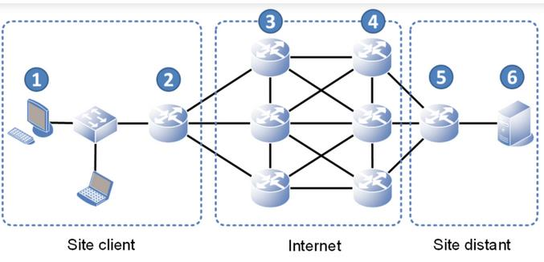
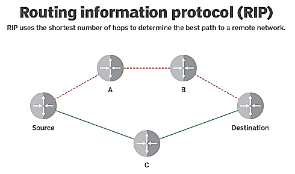
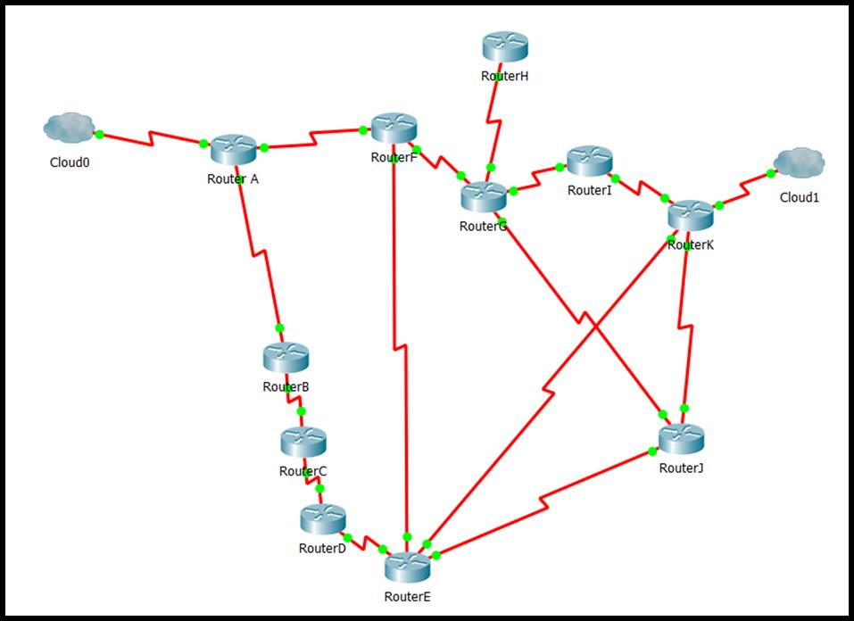
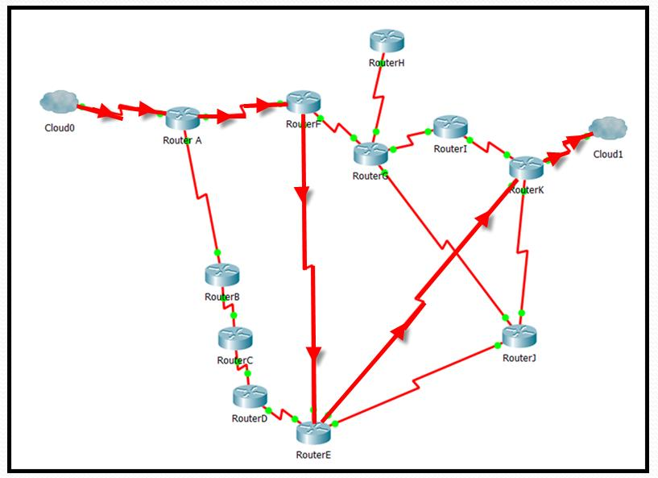
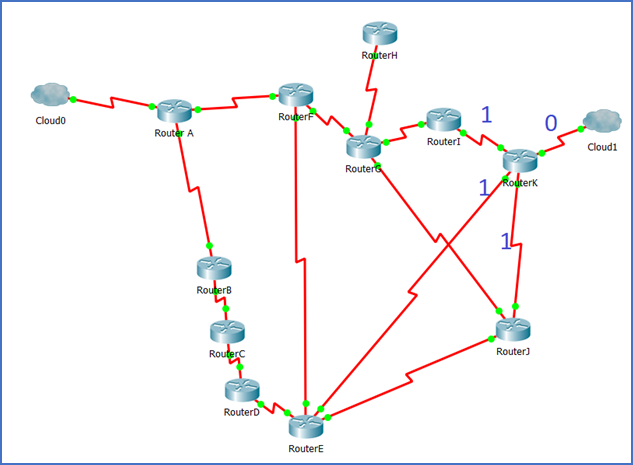
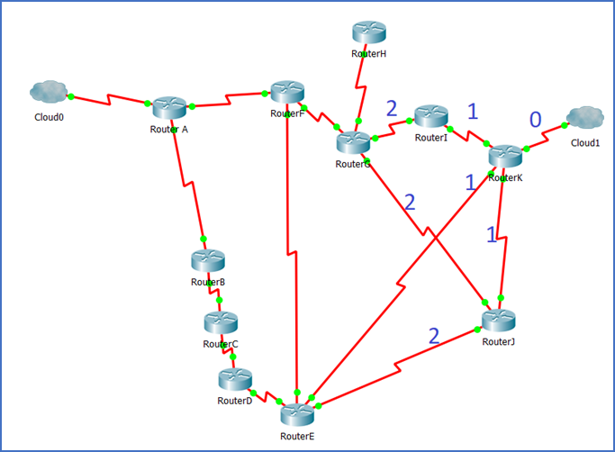
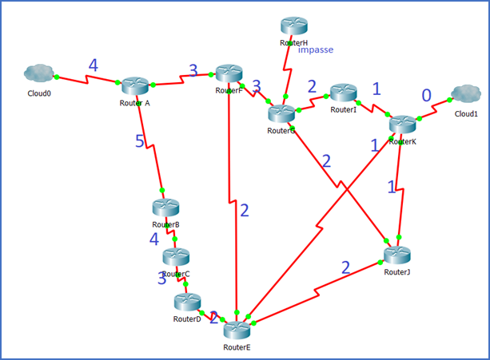
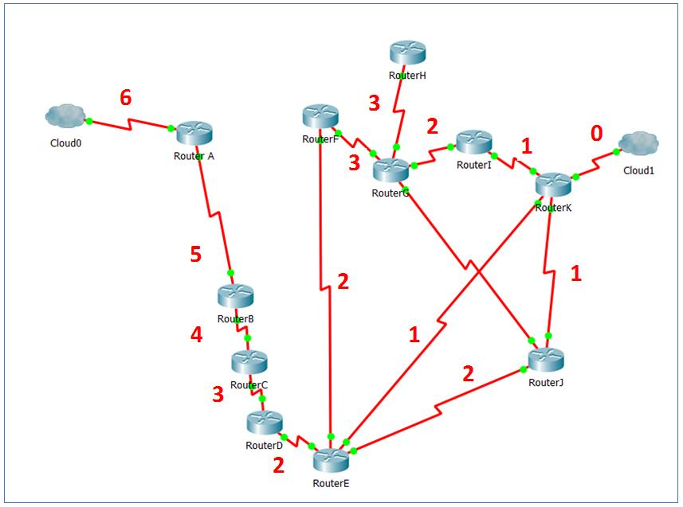
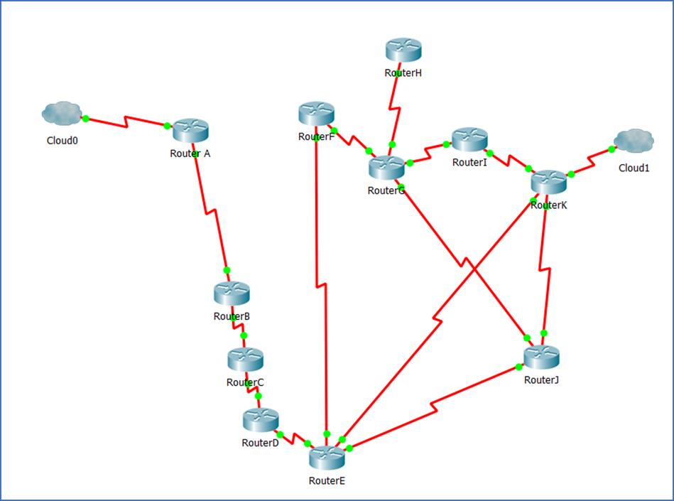

Calculer une métrique de routage
Comprendre comment un routeur peut choisir un chemin à partir d’une métrique, puis comment le réseau s’adapte à une panne.
Routage et métrique
Un paquet suit un chemin sur le réseau, pour cela il doit utiliser les protocoles de routages. On peut voir le chemin parcouru par un paquet avec la commande traceroute.
Routing Information Protocol (RIP, protocole d'information de routage) est un protocole de routage IP de type Vector Distance (à vecteur de distances) s'appuyant sur l'algorithme de détermination des routes décentralisé Bellman-Ford. Il permet à chaque routeur de communiquer aux routeurs voisins la métrique, c’est-à-dire la distance qui les sépare d'un réseau IP déterminé quant au nombre de sauts ou « hops » en anglais.
Dans la vie courante, on calcule une distance en m (ou km), pour le protocole RIP c’est un peu ce que nous allons faire. Nous allons calculer les distances en nombre de routeurs à traverser (la longueur du câble n’a pas d’importance). Et choisir le chemin le plus court pour diriger/orienter nos paquets.
Chaque paquet est envoyé au voisin faisant office de routeur ou étant uniquement un routeur voisin qui est sur le chemin le plus court.
https://fr.wikipedia.org/wiki/Routing_Information_Protocol


Déterminer le plus court chemin
Ici nous devons aller de cloud 0 à cloud 1.
Quel est le chemin le plus court ?
Cloud0 – A – F – E – K – Cloud1
Comment le système le sait-il ?
En faisant des calculs, une suite de calcul … Donc en utilisant un Algorithme.
Voyons comment fonctionne l’algorithme de calcul qui est un des premiers protocoles de routage. Nous verrons celui-ci car il est simple mais sachez que les protocoles utilisés sur Internet sont un peu plus compliqués mais fonctionnent sur des principes similaires basés sur la distance et/ou le coût et appelé métrique. Partons de la destination et écrivons la distance qui nous en sépare. Sur la dernière branche je suis à une distance 0 de l’arrivée. Sur la branche juste après à une distance 1 du routeur.




Je continue 1+1=2
Pour le tronçon entre G et F ce sera 3, 2+1=3 Par contre, pour le tronçon entre E et F j’ai le choix entre 1+1 = 2 et 2+1=3. Je choisis le plus petit donc 2.

À présent le système a rempli ses tables de routage en destination de cloud 0. Il prendra le chemin le plus court qu’il a calculé sans intervention humaine. Avec un Algorithme.
Quel chemin est obtenu après le calcul de la métrique ?
4 – 3 – 2 – 1 A – F – E – K
Et si une liaison tombe en panne ?
Et s’il y a un incident sur la ligne A-F !
Utilisez la même méthode pour calculer le nouveau chemin.


Le protocole IP fera la même chose automatiquement pour trouver un nouveau chemin. Cela s’appelle de la tolérance aux pannes. C’est du routage dynamique par opposition au routage statique qui ne se fait pas tout seul mais par le paramétrage d’un technicien.
Quel nouveau chemin est obtenu si la ligne A-F est en panne ?
6 – 5 – 4 – 3 – 2 - 1 A – B – C – D – E - K